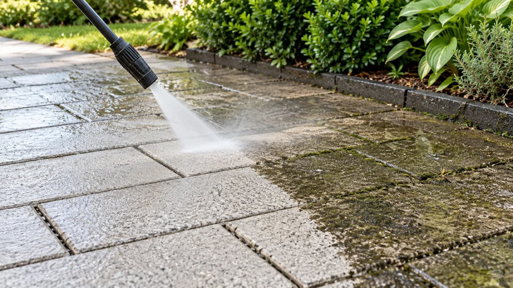
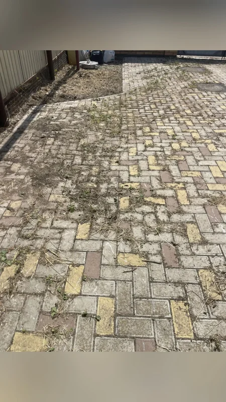
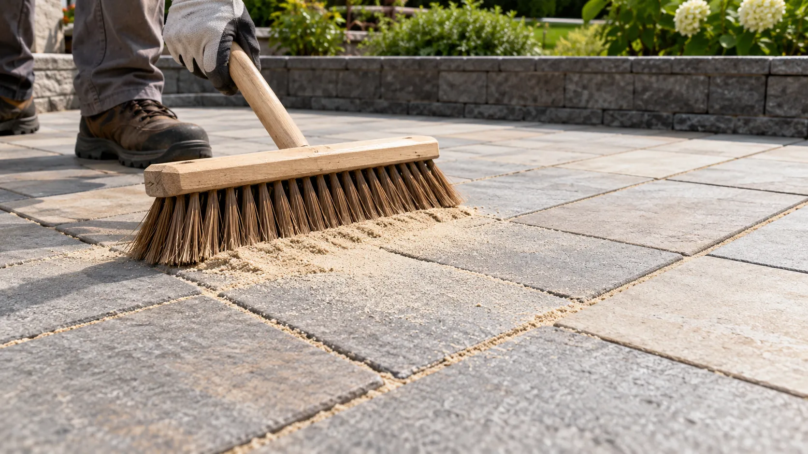

Удаление сорняков и мха
Выбиваем растительность из швов турбофрезой вместе с корневой системой и обрабатываем швы антисептиком.
Глубокая мойка под давлением, удаление мха и сорняков, расклинивание швов кварцевым песком и гидрофобная защита мощения.
Со временем любое мощение теряет аккуратный вид: в швах прорастает трава, поверхность темнеет от дорожной пыли и масла, а дождевая вода вымывает песок. Попытка помыть брусчатку бытовым аппаратом без спецнасадок разбрызгивает грязь по фасаду и забору, но не удаляет корни сорняков. Мы применяем профессиональное роторное оборудование 180–220 бар с насадкой-куполом, бережные очистители и восстанавливаем швы сухим кварцевым песком с гидрофобизацией.
Оцениваем состояние брусчатки и швов, подбираем насадки и состав под конкретную задачу.
Выбиваем растительность из швов турбофрезой вместе с корневой системой и обрабатываем швы антисептиком.
Моем плитку аппаратом 180–220 бар с насадкой-куполом — грязь не разбрызгивается на цоколь, окна и газон.
После высыхания заново прометаем и расклиниваем швы сухим кварцевым или полимерным песком для фиксации покрытия.
Наносим защитный состав: вода не впитывается в бетон и не рвет его зимой, а цвет покрытия становится насыщенным.
Определяем комплекс процедур в зависимости от возраста покрытия и характера загрязнений.
Идеально для дорожек, въездных зон и патио после зимы или осени.Смываем въевшуюся уличную грязь, масляные пятна, копоть и мох. Бесплатно очищаем бордюры и водосточные лотки — двор снова выглядит свежим и ухоженным.

Когда между плитками проросла трава, а песок вымыло дождём.Вычищаем сорняки и мох с корнями, обрабатываем антисептиком и заново расклиниваем швы прокалённым кварцевым или полимерным песком. Это исключает смещение плитки. При необходимости смываем следы цемента и стройматериалов.

Максимальная долговечность и эффект насыщенного камня.После глубокой мойки заполняем швы обеспыленным кварцевым песком и наносим кремнийорганическую пропитку. Плитка защищена от мороза, влаги и высолов, а фактура играет яркими оттенками.

Одинаковых участков не бывает, поэтому рассчитываем работу после осмотра и замеров.
Учитываем общий объём работ, доступ к воде и возможность размещения оборудования.
Сезонный налёт, застарелый мох, въевшееся масло или цементные пятна требуют разной химии и времени.
Оцениваем глубину вымывания песка, количество сорняков и необходимый объём кварцевого заполнителя.
Подбираем гидрофобизатор: матовая бесцветная защита или пропитка с глубоким эффектом «мокрого камня».
Бесплатный осмотр и тест 1 м². Приедем на участок, оценим покрытие и сделаем пробную чистку небольшого фрагмента — вы сразу увидите разницу ДО и ПОСЛЕ. Затем зафиксируем стоимость в прозрачной смете.
Получить расчётПосмотрите основные этапы ухода и восстановления тротуарных покрытий.

Соседние работы можно обсудить вместе с основной задачей.